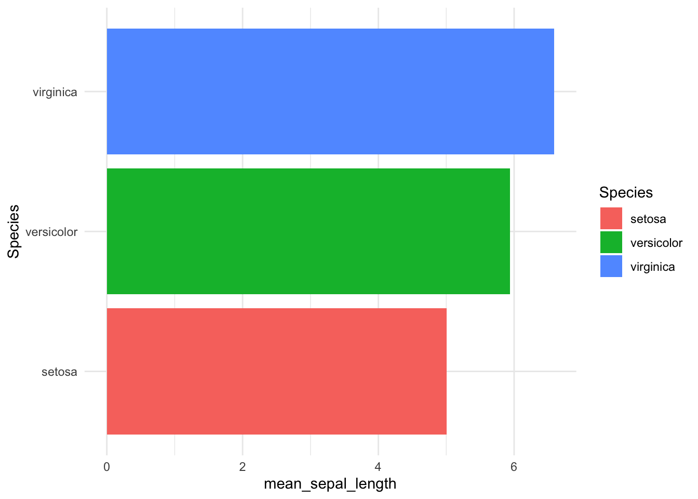

Att jobba med databaser är en av de viktigaste uppgifterna en analytiker eller data scientist har. En tillräckligt stor organisation kan ha flera databaser med olika information och ibland med samma (om än inte alltid överensstämmande). Många databaser som är skräddarsydda för en organisation har egna User Interface (UI) av varierande kvalitet. Det här leder ibland till att analytiker och data scientists lägger ner mycket tid på att hoppa mellan olika UI:s för olika databaser. Det sägs ibland att en Data Scientist arbetar till 80% med databearbetning, men om personen i fråga spenderar dagarna att navigera olika databaser och deras UI:s är den siffran säkert högre.
Att nå och effektivit kunna kommunicera med databaser från ett och samma verktyg kan spara en Data Scientist mycket tid.
Databaser i R
Det finns flera sätt att göra det här på, men jag kommer att argumentera för att göra det i R och IDE:n RStudio.
R har gjort en osannolik resa från att vara ett ganska nischat programmeringsspråk för statistiker till att bli ett av det mest populära verktygen att göra dataanalys i. Ett viktigt skäl till R:s framgång är paketet dplyr. dplyr används för att göra datamanipulering och bearbetning enklare, med ett starkt fokus på läsbarhet och användarvänlighet. Det har ett intuitivt syntax som i princip vem som helst kan förstå.
För att visa hur enkelt dplyr:s syntax är kan vi utgå från data om irisblomman. Nedan filterar vi först bort arten “setosa” och räknar sedan ut den genomsnittliga bladlängden per art. I princip vem som helst kan förstå ungefär vad som pågår nedan.
# A tibble: 2 × 2
Species mean_sepal_length
<fct> <dbl>
1 versicolor 5.94
2 virginica 6.59
Vad har det här med databaser att göra? Eftersom data i arbetslivet ofta ligger i databaser har utvecklarna bakom dplyr lagt ner mycket tid på att skriva SQL-översättningar från dplyr till olika databaser. Vad det här innebär i praktiken är att du kan använda dplyr-syntax för att göra komputeringar i en databas.
Låt oss göra exakt det här genom att skapa en exempeldatabas. Generellt behöver vi användarnamn, lösenord och serverspecifikation för att ansluta till en databas. Men principerna är desamma oavsett om vi skapar den tillfälligt på datorn eller om det är en livs levande databas. För att arbeta med databaser i R laddar vi också paketen DBI och dbplyr.
Warning: Missing values are always removed in SQL.
Use `mean(x, na.rm = TRUE)` to silence this warning
This warning is displayed only once per session.
Ovan kod exekveras alltså inte i R, som generellt körs lokalt på en server eller en dator, utan på den server där databasen ligger. I bakgrunden översätter dplyr koden till SQL. Vi kan se hur den översatta queryn ser ut genom show_query():
<SQL>
SELECT `Species`, AVG(`Sepal.Length`) AS `mean_sepal_length`
FROM `iris`
GROUP BY `Species`
Poängen är att vi kan använda R för att exekvera databearbetningar på mycket större datamängder i en databas än vad som är möjligt direkt i R.
När vi är klara med, säg en aggregering, kan vi enkelt ta in resultatet till R och modellera eller visualisera resultatet.
library(ggplot2)iris_tbl %>%group_by(Species) %>%summarise(mean_sepal_length =mean(Sepal.Length)) %>%collect() %>%ggplot() +aes(y = Species, x = mean_sepal_length, fill = Species) +geom_col() +theme(legend.position ="none") +theme_minimal()

Vad innebär det här för en analytiker?
Det här gör att vi som analytiker kan arbeta sömlöst med databaser direkt i R. Vi slipper hoppa mellan olika UI:s för alla de databaser som finns i vår organisation. Vi kan aggregera och manipulera data via databasen och sedan lyfta in det i R för att där skapa statistiska modeller och AI-flöden och på så sätt demokratisera
För en analytiker är själva databearbetningen bara ett steg i analysen och om man kan flytta databearbetningen närmare ett analytiskt verktyg, som R, kan man dels spara tid men framför allt bygga mer robusta flöden.